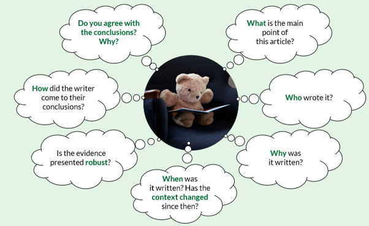

For the first time (maybe ever?), this year, I have fully dedicated myself to the New Year’s resolution. As for most people, every New Year begins with me opening a beautiful – albeit seldom-used – notebook and jotting down a list of things about my life I’d like to be different in the upcoming year. The top thing on my list this year was to stop scrolling.
While it had dawned on me that heading to my Instagram or YouTube feed and watching people (or now, horrifyingly, computer-generated “people”) carrying out hobbies I had previously done and enjoyed had become my biggest hobby, I hadn’t quite grasped to what extent my social media habits had impacted my patterns of thinking.
After being fashionably late to watching The Social Dilemma, a cracking if not terrifying documentary, I learned that every time we tap on those tiny squares, we are greeted with a personalised feed that is designed to keep us hooked. For me, that was videos about cooking, sewing, knitting and hero dogs (yes, I do miss those). By keeping the population engaged online, the creators of these platforms have the perfect method to not only generate an enormous advertising income, but also to ultimately influence human behaviour.
A minor, personal example of this: after a few months of deactivating my Instagram account and pausing my YouTube watch history (life-changing if you’re also as painfully addicted as I was), I first noticed that I had suddenly become less consumed by my protein intake and whether I should be buying protein powder to make healthy breakfast oat cake – which, if we’re all being honest, really just takes like baked porridge. On a separate note, my partner also remarked that it no longer takes me 20 seconds to respond to a simple question. Oops.
Though whiling away my time in a world of memes all seemed relatively harmless on the surface, the absence of this unassuming hobby has started to make me wonder – had passive scrolling impacted my ability to critically think for myself?
What is critical thinking?
Critical thinking is a means of assessing evidence from a variety of sources and drawing a reasoned conclusion that you are capable of explaining to someone else.1
To engage in critical thinking, The University of Edinburgh recommends purposeful reading to encourage active (as opposed to passive) thinking.1 This could apply to news articles, scientific papers, or really any information that we consume on a daily basis. Essentially, this requires sitting down and answering the following questions:

Conclusion
In June 2026, Maia Niguel Hoskin published an interesting article on this topic for Forbes.3 One sentence that stood out to me was: “[A] problem emerges when commentary becomes a substitute for primary information.”3
Many of us consume our news on social media without reading the source article or publication (if this exists). While a 60-second summary reel may be a snappier way to consume our information, much of the nuance and context is likely to be missing, and we risk “outsourcing critical thinking to people we trust”,3 without knowing the agenda of the summariser (that we’ve inevitably never met).
All that’s to say: social media is a crowded place. The platforms that we virtually embrace host millions of opinions, and we engage only with those that either echo ours, or provoke enough emotion to prevent us from closing the app.
Critical thinking is knowing our sources, assessing their accuracy and drawing our own conclusions.
Do you consider yourself a critical thinker?
*Please refer to the fully published article2 to seek the original sources of these definitions.
†“Claire, would you like a cup of tea?” [20 seconds later] “I’d love to go for a walk!”
References
- The University of Edinburgh. Critical thinking. Available at: https://institute-academic-development.ed.ac.uk/study-hub/learning-resources/critical (accessed July 2026).
- Toprak E, et al. BMC Psychol 2026;14:584. doi: 10.1186/s40359-026-04337-4.
- Forbes. Are We Losing The Ability To Think Deeply? What Social Media May Be Doing To Critical Thinking. https://www.forbes.com/sites/maiahoskin/2026/06/05/are-we-losing-the-ability-to-think-deeply-what-social-media-may-be-doing-to-critical-thinking/ (accessed July 2026).
Social media addiction2
In this study, social media addiction is thought of non-clinically, with multiple definitions:*